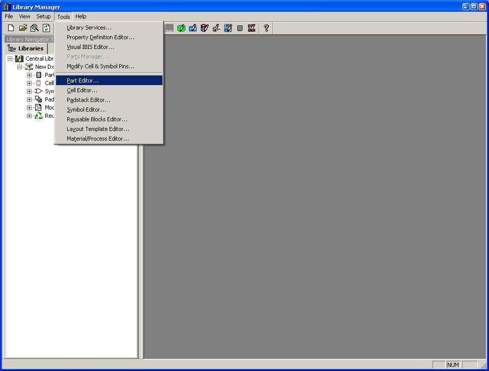
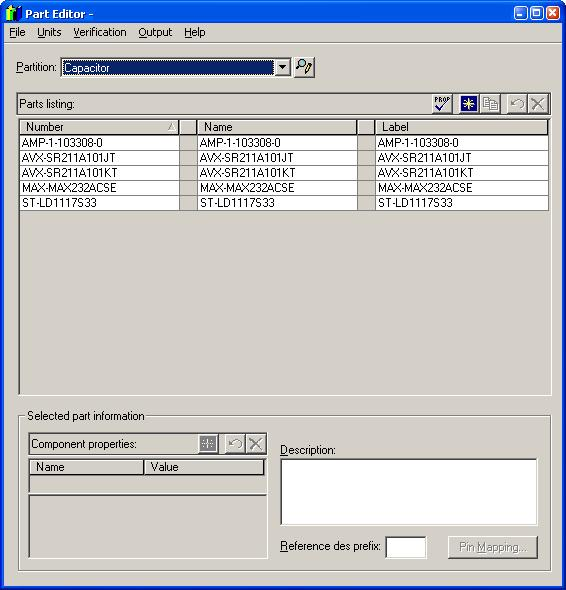
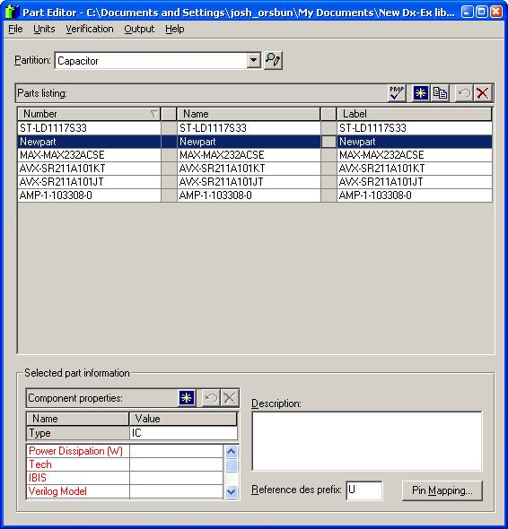
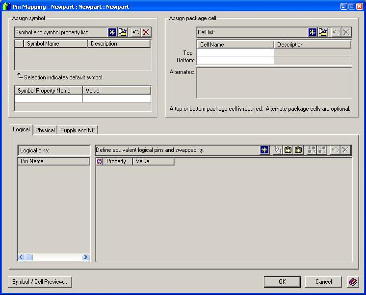
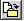
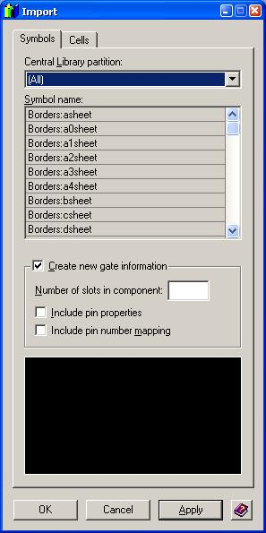
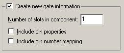
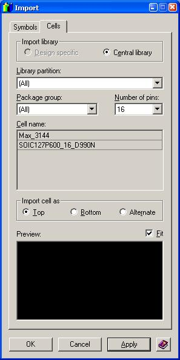

Part Creation Tutorial:
In this tutorial we will learn how to link a Symbol (used in DxDesigner) to a Cell (used in Expedition PCB). In order to do this tutorial properly you will need to have already created a Symbol and a Cell. If you have not created them yet, please refer to the Symbol and Cell tutorials
Now let's learn how to connect a symbol with a cell so that you can get on to creating your Schematic!

(1-opening part editor)
Just as the above image hints at, go to the tools menu -> Part Editor… in order to start creating a Part.

(2- part editor)
If you have already looked at the cell tutorial then you will be slightly familiar with this interface. The active partition is named in the top drop-down box and all of the parts contained in that partition are listed below. The Parts listing box has a "properties" button, a "new part" button, a "copy" button, an "undo" button, and a "delete" button, in that order, from left to right.
When you click the "new part" button, a new row is added to the parts listing box with the word “new” in one or more columns. Replace those words with the name of the part. Make sure to fill all three columns with exactly the same name as it will make it easier to reference the part later on. When you have your new part fully named and highlighted like the in the next image, click the button on the bottom right labeled Pin Mapping…

(3- new part)
The next image shows you the pin mapping window

(4- Pin Mapping window)
There are three main aspects to the pin mapping window. In the upper right hand corner is the "Assign Symbol" section, in the upper left hand corner is the "Assign Cell" section, and on the bottom of the pin mapping window is where the actual mapping occurs. In order to start linking the cell and symbol you will need to place each in their respective sections.
To do this, you must know about the four buttons within both the "Assign symbol" and "Assign cell" sections. From left to right, the buttons are "new", "open", "undo", and "delete". You will not need to use the "new" button as this will add complications to your already complicated design.
Let's begin ...
If you need to create a new symbol or cell for your part, go to the library manager and open up the symbol editor or cell editor, as well as refer to the SYMBOL CREATION TUTORIAL or CELL CREATION TUTORIAL. If you already have a symbol and cell created, then click on the button second from the left from either top section that looks like the following.

(5-open button)
This will open the following window which will allow you to add both a symbol and a cell to your part.

(6-import window)
If your window does not correspond to the previous image, it is because you are on the Cells tab of the import window. Merely click on either tab to switch between Cells and Symbols. Right now, click on the Symbols tab.
The top half of the window is pretty self explanatory. There is a drop-down box for selecting either all partitions or a specific partition which will then populate the box below it with the symbols currently in that partition. What does need attention is the lower half.
The lower half of this window is used only when you have created a symbol that will be implemented several times on the cell. This is best described through an example.
Let us suppose, for example, that you want to use one AND gate in your design. You might find that the only parts that are available have four AND gates per chip (i.e. so-called "quad AND gates"), and thus you will have bought a chip with four times as many gates as you need for your design. In addition you might have already created the symbol for your single AND gate, but now you have a chip with four of them.
This problem is solved by inserting the number “4” in the field “Number of slots in component”
Enough with this side-comment. We are actually not going to fully explain about how to deal with more than one "slot" per component since this is a fairly complex task and we do not need it for class projects. You will, for the most part, be designing a symbol specifically for each cell. Thus you may just insert the value “1” in the “Number of slots in component” box like the following image shows.

(7-multiple instances check box)
Now you are done with the Symbol tab so let's move on to the cell tab. You will find that the cell tab is very simple. Here is what the window looks like.

(8-cells import)
Merely use the three drop-down boxes to narrow the search for cells to display in the lower box and then click on the cell you wish to use in this part.
When you are done click the "OK" button and have the symbol and cell added to the part.
Now to connect the names of the pins from the symbol to the actual pins on the cell, including those pins that are not connected and also those that are attached to power or ground.
At the bottom of the Pin Mapping screen we find the pin mapping section. There are three tabs to this section and you will need to deal only with two of them. The logical tab can be ignored.
The second tab is the physical tab which will connect the labeled pins in the symbol to the pins available in the cell.
The third and final tab is the Supply and NC tab. This tab is used for the pins that are not connected to anything and for pins that are to be connected to either the power or ground that were not specified in the symbol.
To specify a supply name, left click on the Supply name field and type a name followed by pressing the “enter” key. You may then enter as many pins that are connected to that supply.
To specify no connect pins simply follow the last few steps listed for adding supply pins on the bottom section with the label “no connect”.